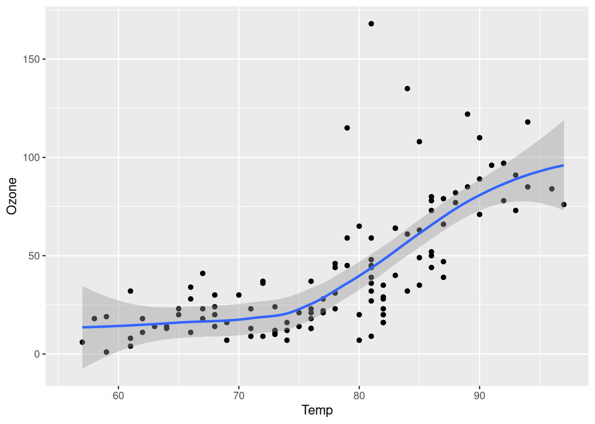
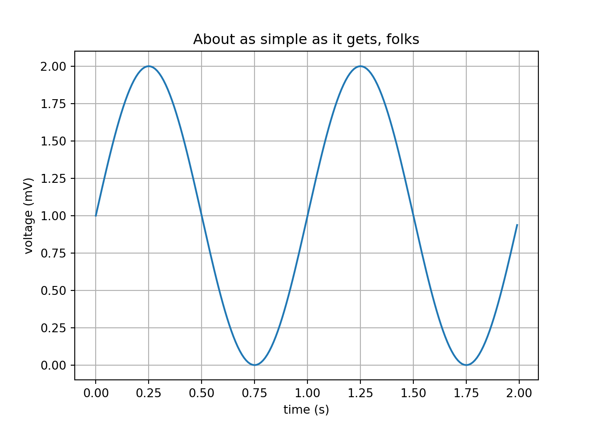

library(ggplot2)
ggplot(airquality, aes(Temp, Ozone)) +
geom_point() +
geom_smooth(method = "loess")

диаграмма обработки markdown
Рабочие блокноты Quarto основаны на проекте Pandoc и используют язык разметки Мarkdown.
Markdown — это простой текстовый формат, который легко писать и, что еще более важно, легко читать:
Документ в формате Markdown должен быть доступен для публикации как есть, как обычный текст, не создавая впечатление, будто он размечен тегами или инструкциями по форматированию. – John Gruber
Рассмотрим наиболее часто встречаемые примитивы разметки
Quarto позволяет объединить исполняемый код и сопутствующее описание в готовый документ. Чтобы узнать больше о Quarto, посетите https://quarto.org. Блоки кода, которые используют фигурные скобки вокруг имени языка (например, ```{r}), являются исполняемыми и будут запущены Quarto во время рендеринга
## Качество воздуха
@fig-airquality более подробно изучает влияние температуры на уровень озона.
```{r}
#| label: fig-airquality
#| fig-cap: "Температура и уровень озона."
#| warning: false
library(ggplot2)
ggplot(airquality, aes(Temp, Ozone)) +
geom_point() +
geom_smooth(method = "loess")
```В результате получим следующее. Рисунок 4.1 более подробно изучает влияние температуры на уровень озона.
library(ggplot2)
ggplot(airquality, aes(Temp, Ozone)) +
geom_point() +
geom_smooth(method = "loess")Из исполняемых блоков кода можно создавать самые разные типы выходных данных, включая графики, таблицы и простой текст.
Встраиваемый (Inline) код позволяет вам выполнять код в markdown, например, для автоматического использования самых последних вычислений в повествовании. Синтаксис встроенного кода похож на блоки кода, за исключением того, что используеся один тик (`) вместо тройных тиков (```). Встраиваемый код может использоваться в середине markdown. Например, следующий код сохраняет переменную radius в блоке кода, а затем обращается к ней в предложении с помощью встроенного кода:
```{r}
radius <- 5
```
The radius of the circle is `{r} radius`В результате получаем:
The radius of the circle is 5.Встроенные выражения должны быть ограничены простыми значениями, которые предварительно вычисляются в обычных ячейках кода (а не вызовами функций, которые выполняют нетривиальную работу). Это связано с тем, что протокол, используемый для встроенных выражений, несовместим с библиотеками, использующими многопоточность.
Движки рендеринга Knitr и Jupyter позволяют совмещать вычисления на разных языках в одном документе. Например:
```{r}
#| cache: true
plot(pressure, pch=21, col='blue', bg='lightblue')
``````{python}
#| warning: false
#| message: false
#| error: false
#| cache: true
import matplotlib.pyplot as plt
import numpy as np
# Data for plotting
t = np.arange(0.0, 2.0, 0.01)
s = 1 + np.sin(2 * np.pi * t)
fig, ax = plt.subplots()
ax.plot(t, s)
ax.set(xlabel='time (s)', ylabel='voltage (mV)',
title='About as simple as it gets, folks')
ax.grid()
fig.savefig("test.png")
plt.show()
```
```{julia}
#| warning: false
#| message: false
#| error: false
#| cache: true
using Plots
x = range(0, 10, length=100);
y1 = sin.(x);
y2 = cos.(x);
plot(x, [y1 y2])
```
При рендеринге документа Quarto блоки кода выполняются автоматически. Прямо над документом находится панель инструментов, содержащая различные параметры, включая Render (сегментированная синяя стрелка). По умолчанию документ qmd конвертируется в html.
Задать название блока можно с помощь параметра label:
```{r}
#| label: convert
airquality$TempC <- (5 / 9) * (airquality$Temp - 32)
```Параметр echo: false отключает печать кода (отображается только вывод).
``` r
library(tidyverse)
library(palmerpenguins)
penguins |>
mutate(
bill_ratio = bill_depth_mm / bill_length_mm,
bill_area = bill_depth_mm * bill_length_mm
)
```
Line 3
Take `penguins`, and then,
Lines 4-7
add new columns for the bill ratio and bill area.Существует широкий спектр опций для настройки вывода из выполненного кода. Все эти опции могут быть указаны либо глобально, либо для каждого блока кода. Например, вот модификация примера R, указывающая, что мы не хотим “отражать” код в выходном документе:
---
title: "My Document"
execute:
echo: false
---Параметр echo может быть переопределен для конкретно блока кода. Например:
```{r}
#| echo: true
plot(cars)
```Параметры блока кода включены в специальный комментарий в верхней части блока (строки в верхней части, начинающиеся с #|, считаются параметрами).
Наиболее распространенные параметры приведены далее:
| Option | Description |
|---|---|
eval |
Вычислить блок (если false, то блок кода просто дублируется в вывод). |
echo |
Включить исходный код в вывод |
output |
Включить результаты выполнения кода в выходные данные (
|
warning |
Включать предупреждения в вывод |
error |
Включать ошибки в вывод (это подразумевает, что ошибки выполнения кода не остановят обработку документа). |
Пример Knitr с некоторыми из этих дополнительных параметров:
---
title: "Knitr Document"
execute:
echo: false
---
```{r}
#| warning: false
library(ggplot2)
ggplot(airquality, aes(Temp, Ozone)) +
geom_point() +
geom_smooth(method = "loess", se = FALSE)
```
```{r}
summary(airquality)
```Можно указать подпись и замещающий текст для рисунков, сгенерированных из кода, используя параметры fig-cap и fig-alt. Например, здесь эти параметры добавляются в ячейку кода которая создает график:
```{python}
#| fig-cap: "График в полярных координатах"
#| fig-alt: "График линии в полярных координатах"
#| cache: true
import numpy as np
import matplotlib.pyplot as plt
r = np.arange(0, 2, 0.01)
theta = 2 * np.pi * r
fig, ax = plt.subplots(subplot_kw={'projection': 'polar'})
ax.plot(theta, r)
ax.set_rticks([0.5, 1, 1.5, 2])
ax.grid(True)
plt.show()
```
| Язык разметки Markdown | Результат |
|---|---|
|
курсив, жирный, жирный курсив |
|
верхний индекс2 / нижний индекс2 |
|
| Язык разметки Markdown | Результат |
|---|---|
|
4.4 Заголовок 2 |
|
4.4.1 Заголовок 3 |
|
Заголовок 4 |
|
Заголовок 5 |
|
Заголовок 6 |
| Язык разметки Markdown | Результат |
|---|---|
|
https://rct.bsu.by |
|
Наш факультет |
|
|
Картинка становится кликабельной при рендеринге |
Перекрестные ссылки на рисунки создаются, добавлением к ним идентификатора с префиксом fig-, а затем ссылаясь на рисунок с помощью префикса @. Например:
{#fig-grach}
Как показано на рисунке @fig-grach.Для рисунков, созданных блоками исполняемого кода, используется label с префиксом fig-, чтобы сделать их перекрестно-ссылочными. Например:
Для демонстрации графика линии используется @fig-cars-plot.
```{r}
#| label: fig-cars-plot
#| fig-cap: "Cars plot "
plot(cars)
```Для демонстрации графика линии используется Рисунок 4.2.
```{r}
#| label: fig-cars-plot
#| fig-cap: "Cars plot "
#| cache: true
plot(cars)
```Подзаголовки для вычисляемых рисунков задаются с использованием опций fig-cap и fig-subcap. Если использовать параметр label с префиксом fig- то рисунок будет пронумерован и [перекрестно-ссылаемым].
```{r}
#| label: fig-charts
#| fig-cap: "Charts"
#| fig-subcap:
#| - "Cars"
#| - "Pressure"
#| layout-ncol: 2
#| cache: true
plot(cars)
plot(pressure)
```

Рисунки будут размещены в две колонки только при конвертации в html
| Язык разметки Markdown | Output |
|---|---|
|
|
|
|
|
|
|
продолжается после
|
|
|
Например, например мы можем разместить 2 списка рядом:
::: {layout-ncol=2}
### List One
- Item A
- Item B
- Item C
### List Two
- Item X
- Item Y
- Item Z
:::Списки будут размещены в две колонки только при конвертации в html
В обычных таблицах могут содержаться только элементы представленные простым текстом.
Выравнивание по
| Правому краю | Левому краю | Умолчанию | Центру |
|-------------:|:------------|-----------|:------:|
| 12 | 12 | 12 | 12 |
| 123 | 123 | 123 | 123 |
| 1 | 1 | 1 | 1 |Выравнивание по
| Правому краю | Левому краю | Умолчанию | Центру |
|---|---|---|---|
| 12 | 12 | 12 | 12 |
| 123 | 123 | 123 | 123 |
| 1 | 1 | 1 | 1 |
Расширенные таблицы (grid tables) — это более продвинутый тип таблиц разметки, которые допускают произвольные блочные элементы (несколько абзацев, блоков кода, списков и т. д.). Например: строка =s отделяет заголовок от тела таблицы и может быть опущена для таблицы без заголовка. Ячейки таблиц сетки могут содержать произвольные блочные элементы (несколько абзацев, блоков кода, списков и т. д.)
Выравнивания можно указывать так же, как и в случае с таблицами конвейера, помещая двоеточия на границах разделительной линии после заголовка.
+-----------+-----------+--------------------+
| Fruit | Price | Advantages |
+===========+===========+====================+
| Bananas | $1.34 | - built-in wrapper |
| | | - bright color |
+-----------+-----------+--------------------+
| Oranges | $2.10 | - cures scurvy |
| | | - tasty |
+-----------+-----------+--------------------+
: Пример расширенной таблицы| Fruit | Price | Advantages |
|---|---|---|
| Bananas | $1.34 |
|
| Oranges | $2.10 |
|
Для вставки формулы в текст используется $. Для выделения отдельным блоком используется $$. Например:
| Язык разметки Markdown | Результат |
|---|---|
|
формула в тексте: \(E=mc^{2}\) |
|
отдельный блок формул: \[E = mc^{2}\] |
Quarto имеет встроенную поддержку для диаграмм Mermaid и Graphviz. Mermaid – это инструмент для создания диаграмм и графиков на основе Javascript, который использует определения текста, вдохновленные Markdown, и рендерер для создания и изменения сложных диаграмм.
```{mermaid}
flowchart LR
A[Hard edge] --> B(Round edge)
B --> C{Decision}
C --> D[Result one]
C --> E[Result two]
```flowchart LR
A[Hard edge] --> B(Round edge)
B --> C{Decision}
C --> D[Result one]
C --> E[Result two]
> BlockquoteЭто короткая цитата
| Markdown Syntax | Output |
|---|---|
|
endash: – |
|
emdash: — |
Символы подставляются только при конвертации в html